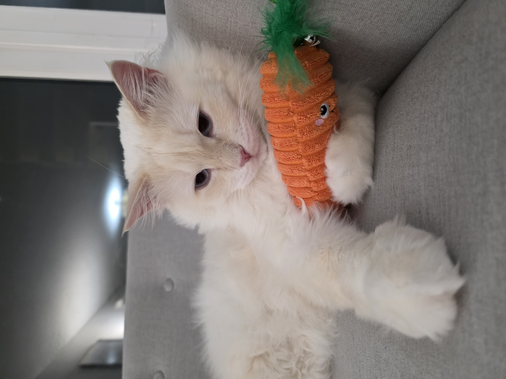
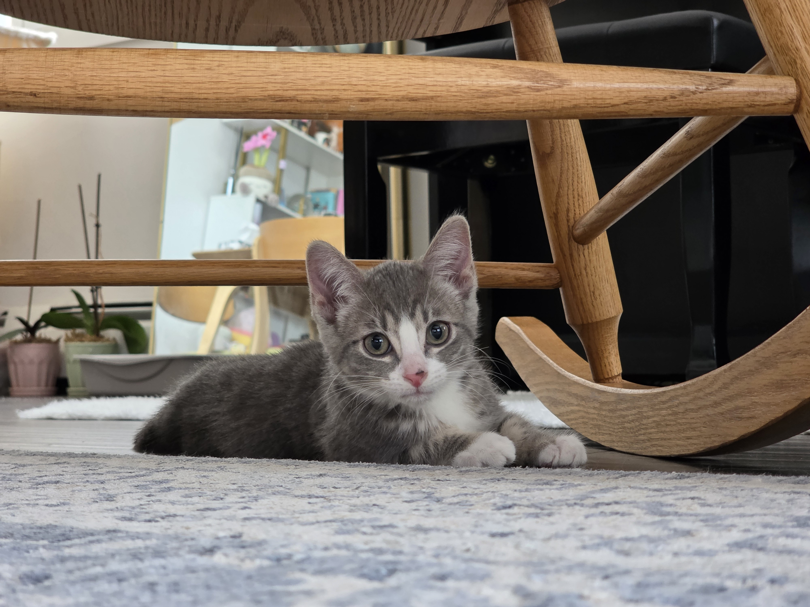
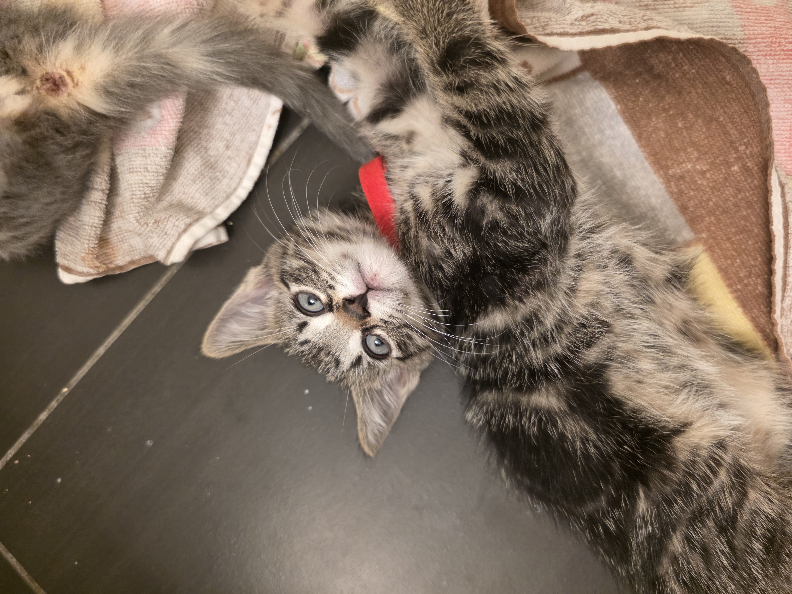
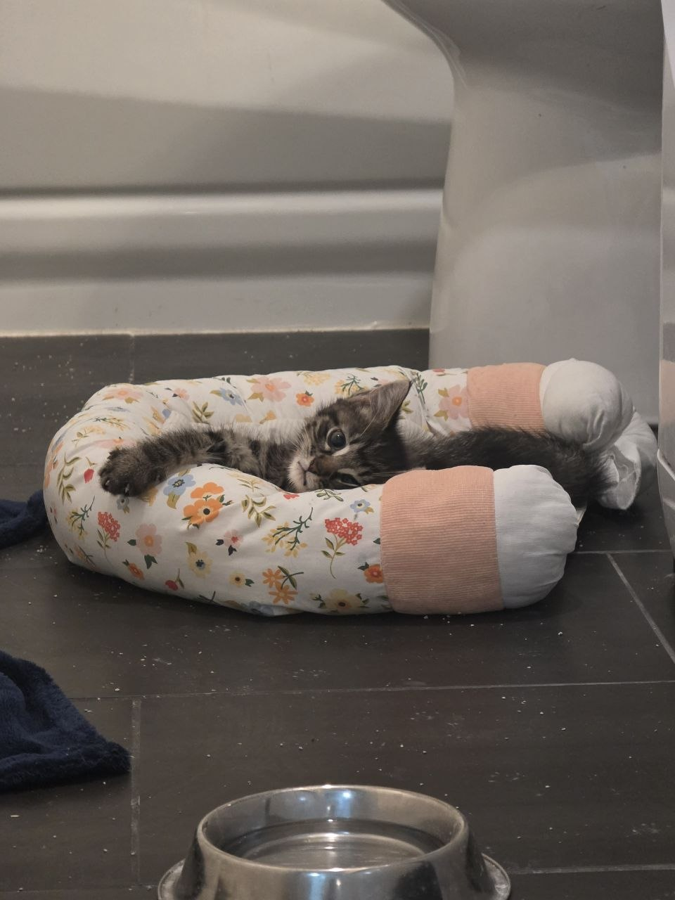
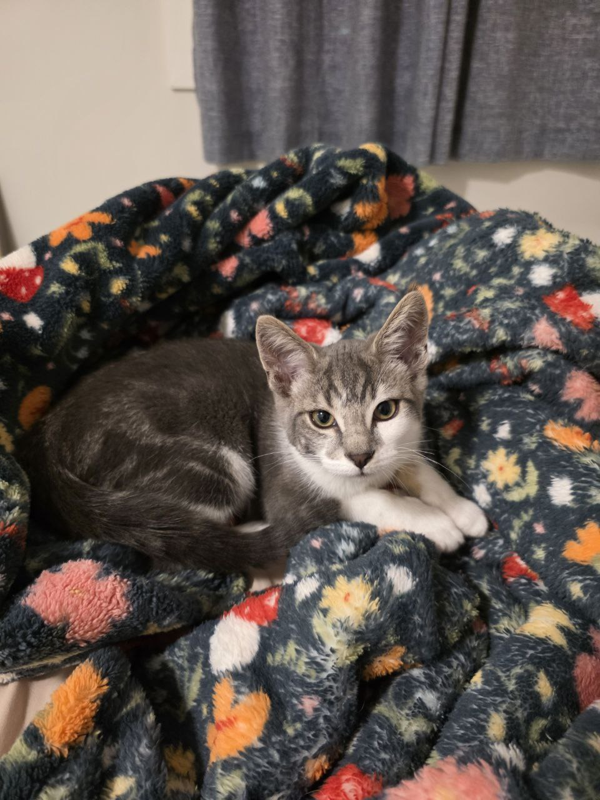
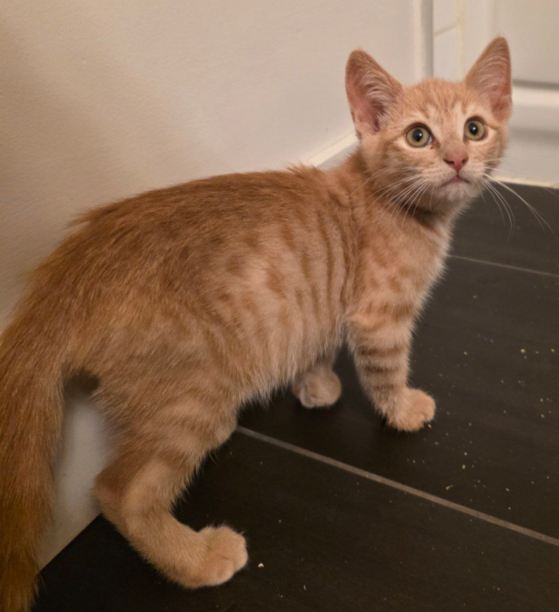
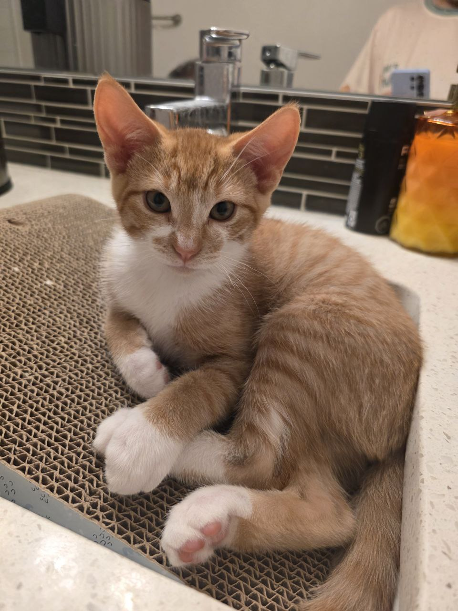
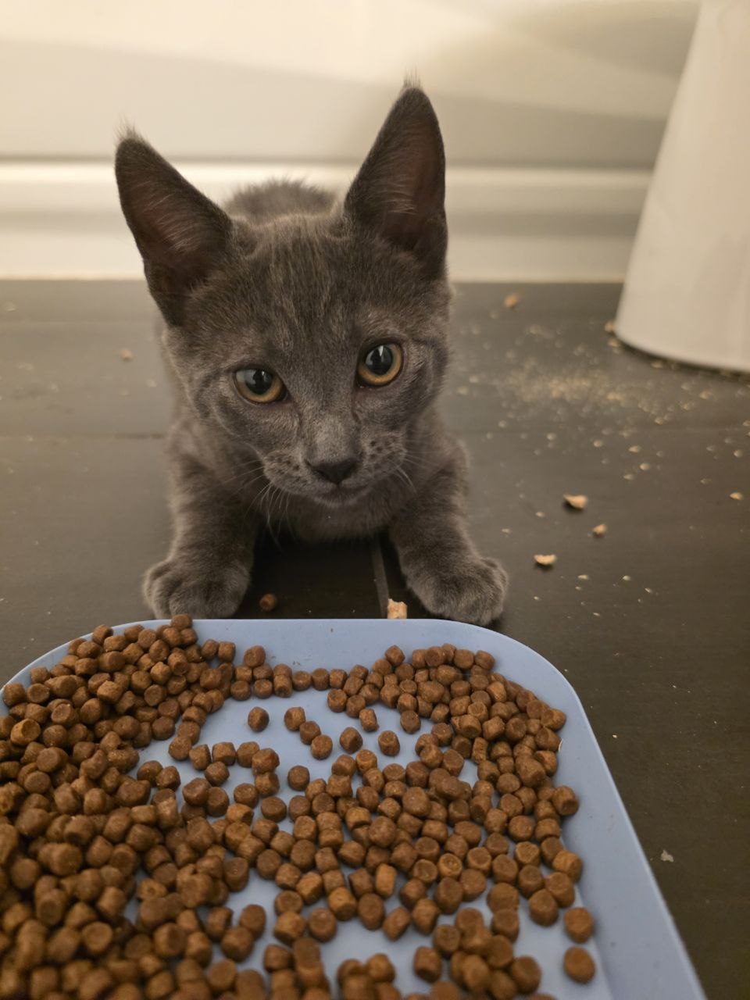
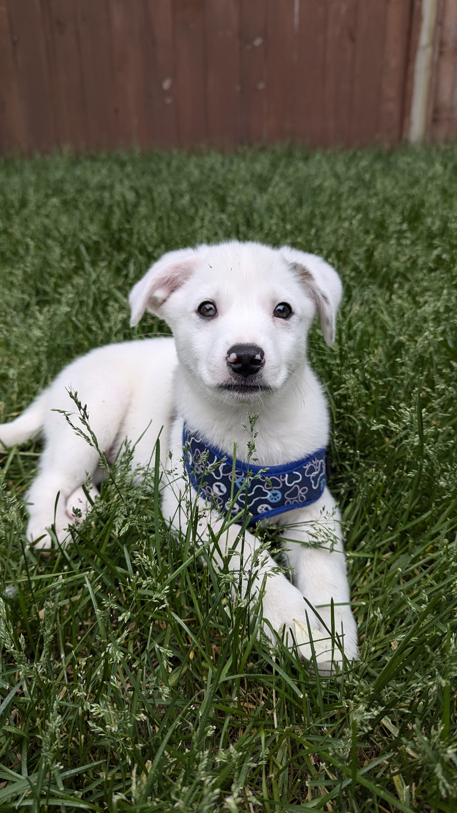

Animals
Panbeh
Panbeh first came to us as a foster cat. We adopted him, and he is now our much-loved companion.

Foster Kittens







Puppy
Puppy had a temporary, caring place to stay while preparing for the next chapter.
